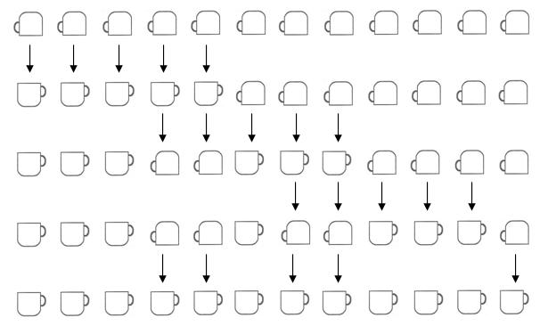

| C - The Cup Turning Machine |
Do
you know how helpless you feel if you have
a full cup of coffee in your
hand and you start to sneeze?
Jean Kerr
A crazy inventor has patented a cup turning machine, with which he hopes to become a millionaire. This amazing machine is able to turn exactly m cups at a time; if a cup is upside down, then it is turned face up, and vice versa. It is very convenient for cafes and restaurants!
We have bought a cup turning machine for our restaurant. But now the problem is that we have more than m cups. In fact, we have n empty cups that are upside down, and we want to turn them face up using the machine. As the machine spends much electricity, it should be used the minimum number of times.
For instance, if there are 12 cups and the machine m = 5, a possible solution with 4 steps is:

Could you determine the minimum number of steps necessary to solve this problem?
Let n be, 1 ≤ n ≤ 1000000, the number of cups, initially upside down, and let m be, 1 ≤ m ≤ n, the number of cups that the machine turns every step. Calculate the minimum number of steps necessary to achieve that all the cups turn face up.
The first line of the input contains an integer, t, indicating the number of test cases. For each test case, one line appears containing two integers n and m, representing respectively the total number of cups, and the number of cups that the machine turns each step.
For each test case, the output should contain a
single line indicating the
minimum number of steps
necessary to solve this problem, or IMPOSSIBLE if there is no solution.
5
5 5
1001 50
12 5
20 18
777 55
1
IMPOSSIBLE
4
3
15